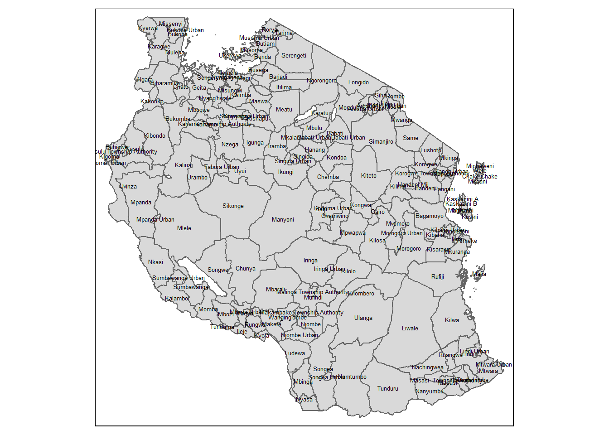
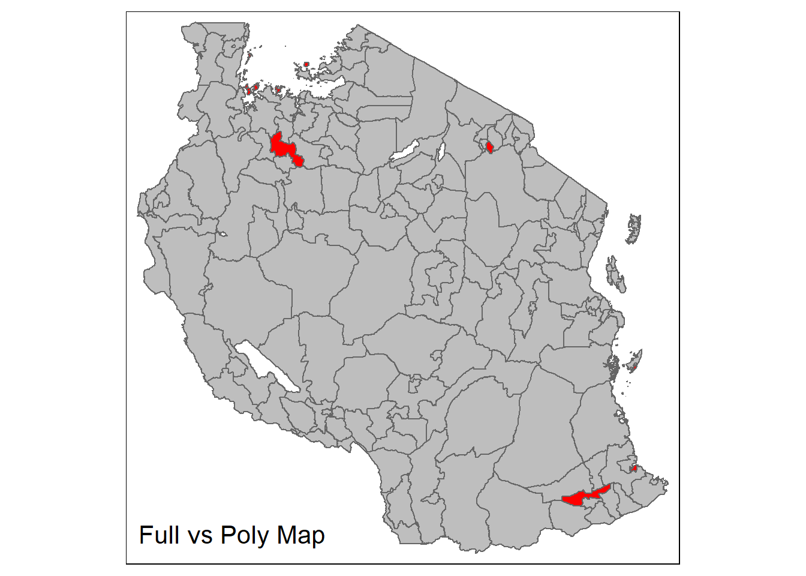
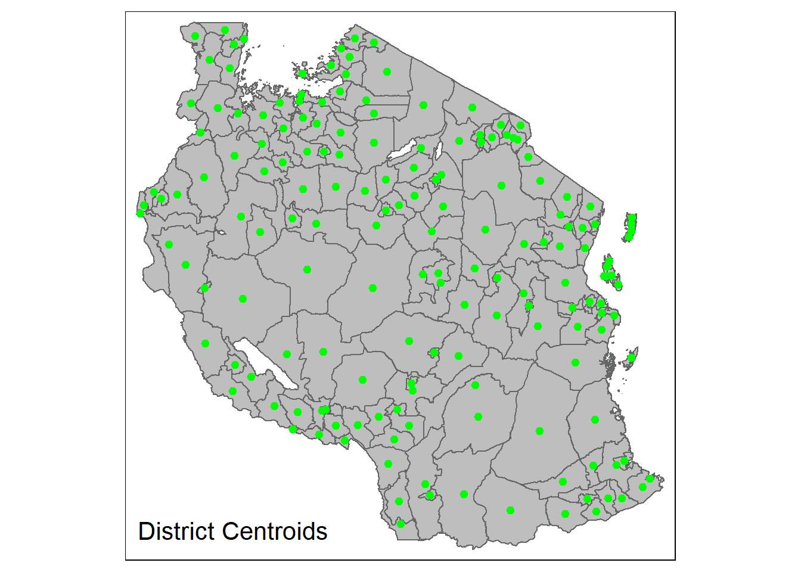

pacman::p_load(olsrr, sf, GWmodel, tmap, tidyverse, ggstatsplot)Geographically Weighted Modeling of Financial Inclusion in Tanzania
(WIP) We look into financial inclusion in Tanzania based on a 2023 survey of close to 10 thousand residents.
A. Getting Started
A.1 Background
The World Bank defines financial inclusion as the state of having access to useful and affordable financial products to meet one’s needs. Financial inclusion is an enabler to 7 of the Sustainable Development Goals, and is seen as the key enabler to reduce extreme poverty.
One key dimension of financial inclusion that the World Bank looked at in their latest Global Findex Database 2021 is the ownership of bank accounts for adults. In this report, 76% of the global adult population have their own accounts, but only 71% of the developing nations’ do. In some countries like Tanzania this number is even lower at 52%. Banking is just one traditional dimension. Other vehicles like mobile payments can bridge the gap in access to services for some of these nations.
Tanzania recognizes the importance of financial inclusion in promoting economic growth and with the Bank of Tanzania, the country’s central bank, the Microfinance Policy of 2000 was developed and focused on expanding financial services for low-income individuals.
The program behind financial inclusion has been structured from 2014 with the first National Financial Inclusion Framework for 2014-2016, with the latest version being the third framework for 2023-2028. While there has been significant progress, (e.g., access to financial services has risen from 42% in 2013 to 89% in 2023) the country continues to aim for inclusion for the whole population by increasing access, encouraging usage and enhancing the quality of financial services.
A.2 Objectives
Finscope Tanzania 2023 is a public-private sector collaboration and aimed, among others, to understand and describe the financial behavior of individuals in the country and to establish an updated view of the level of financial inclusion across various measures. A large part of the findings is showing the change (improvements) of the overall measures against the previous 2017 report.
The objective of this study is to build on the Finscope Tanzania 2023 by identifying influential variables and identifying if geospatial factors influence the effect of those variables.
In order to satisfy this, the specific deliverables for the study will be:
to build a global or non-spatial explanatory model for the level of financial inclusion across Tanzania;
to build a geographically weighted explanatory model for the same response variables; and,
to assess the advantage of the geographically weighted model and to analyse the geographically weighted model
A.3 Data Sources
The following data sources are used for this analysis:
Finscope Tanzania 2023 individual survey data from Finscope Tanzania
The dataset is contained in a csv and translates the responses from 9,915 individuals who answered the survey
The respondents are all adults aged 16 years and above take across Tanzania
The dataset also includes derived fields which include different indicators for financial inclusion based on different criteria
District-level boundaries in Tanzania as a shapefile from geoBoundaries.org portal
A.4 Importing and Launching R Packages
For this study, the following R packages will be used. A description of the packages and the code, using p_load() of the pacman package, to import them is given below.
The loaded packages include:
olsrr - for building OLS (ordinary least squares) regression models and performing diagnostic tests
GWmodel - for calibrating geographically weighted family of models
tmap - for plotting cartographic quality maps
ggstatsplot - for multivariate data visualization and analysis
sf - spatial data handling
tidyverse - attribute data handling
B. Data Loading and Preparation
B.1 Loading Tanzania District boundaries
We load the district level boundaries in the following code chunk using st_read() and indicating the appropriate layer name. (i.e., the level 2 map)
tz_dist <- st_read(dsn="data/geospatial",
layer="geoBoundaries-TZA-ADM2")Reading layer `geoBoundaries-TZA-ADM2' from data source
`C:\drkrodriguez\ISSS626-GAA\Take-home\Take-home_Ex03\data\geospatial'
using driver `ESRI Shapefile'
Simple feature collection with 170 features and 5 fields
Geometry type: MULTIPOLYGON
Dimension: XY
Bounding box: xmin: 29.58953 ymin: -11.76235 xmax: 40.44473 ymax: -0.983143
Geodetic CRS: WGS 84The output shows that there are 170 objects loaded which corresponds to individual districts. The object is also of multipolygon class which could indicate that there are districts with discontinuous land areas, like islands.
We can create a simple map to visualize the boundaries using qtm() from tmap.
qtm(tz_dist, text = "shapeName", text.size = 0.4)
B.2 Deriving District centroids
Before we load the aspatial data, we will process the district boundary map to be able to use it for future operations with the other dataset. One step that needs to be done is to define representative points, which can be the centroids for the boundary map. The primary purpose of this is to be able to map the aspatial data for a district into a single location. In order to do this, the first step is to convert the multipolygon layer object into a polygon object which will allow for proper centroid calculations for each district.
We use the code chunk below to convert the sf object into polygons using st_cast() and then create a column for each individual polygon’s area using mutate() with st_area(). We then use groupby() to reduce back the object to one row per district and then filter() to keep only the largest polygon for each district.
tz_dist_poly <- tz_dist %>%
st_cast("POLYGON") %>%
mutate(area = st_area(.)) %>%
group_by(shapeName) %>%
filter(area == max(area)) %>%
ungroup() %>%
select(-area) %>%
select(shapeName)Warning in st_cast.sf(., "POLYGON"): repeating attributes for all
sub-geometries for which they may not be constantWe can produce a map with tmap package to see if the operation had any irregular effects on the geography. In order to see the difference between the original map and the polygon map, we add the original map as the first layer in red, and then overlay the polygon map. The areas which now appear red are the polygons or areas that have been excluded from the original map to the polygon map.
tm_shape(tz_dist) +
tm_polygons("red") +
tm_shape(tz_dist_poly) +
tm_polygons("grey") +
tm_layout(title = "Full vs Poly Map",
title.position = c("left", "bottom"))
From the output, we see that in addition to a few small islands, there are three inland areas that have been excluded from the original map. While this produces holes in the new map, this might not be a big concern right now as long as the centroids we get from the remaining geometries is meaningful.
In order to generate the centroids, we can now use st_centroid() to compute them across each district’s largest polygon.
tz_dist_centroids <- st_centroid(tz_dist_poly)Warning: st_centroid assumes attributes are constant over geometriesWe can check the location of the centroids by plotting them as a layer on top of the original district boundary layer using tmap package in the code below.
tm_shape(tz_dist) +
tm_polygons("grey") +
tm_shape(tz_dist_centroids) +
tm_dots("green", size = 0.2) +
tm_layout(title = "District Centroids",
title.position = c("left", "bottom"))
The centroid locations look mostly acceptable, with a few exceptions where they might be lying somewhere away from the district boundaries given some of the districts have odd, nonconvex shapes.
B.2 Loading Finscope Tanzania 2023 Respondent Data
We can use read_csv() in the code chunk below to load the raw respondent data into an R object.
fstz23 <- read_csv("data/aspatial/FinScope Tanzania 2023_Individual Main Data_FINAL.csv", show_col_types = FALSE)Warning: One or more parsing issues, call `problems()` on your data frame for details,
e.g.:
dat <- vroom(...)
problems(dat)There are 9915 rows or records, and 721 columns or fields. Most of these columns should not be relevant in meeting our objective, so it is advised to limit the data we work with to those meaningful variable. These variables should be our variable(s) of concern, or the dependent variable(s), and the variables that may contribute to it, or the independent variables.
B.4 Preparing Finscope Tanzania 2023 Respondent Data
B.4.1 Selecting potential variables
The first step in preparing the dataset is to reduce the data by keeping only the potentially relevant fields. This means identifying fields that can be used as is or to derive both the response variable(s) and the explanatory variables.
This is performed by scanning the datamap file (i.e., data dictionary) that accompanies the dataset. From there, we decide to keep only the following variables. We also change the variable names to a shorter and more recognizable one.
| Variable Name | Description | New Variable Name |
|---|---|---|
| BANKED | Classified as: Banked; Not Banked | fi_banked |
| OVERALL_FORMAL | Classified as using formal instruments: Yes, No | fi_formal |
| INFORMAL | Classified as using informal instruments: Yes, No | fi_informal |
| Variable | Description | New Variable Name |
|---|---|---|
| reg_name | Region name | region |
| dist_name | District name | district |
| ward_name | Ward name | ward |
| clustertype | Indicates if in rural or urban | urban |
| Variable Name | Description | New Variable Name |
|---|---|---|
| c8c | Age | age |
| c9 | Gender: male. or female | female |
| c10 | Marital status: married, divorced, widowed, single (4 levels) | maritalstatus |
| c11 | Highest level education (10 levels of values) | education |
| c2 | Head of household: respondent, not the respondent | head_hh |
| c8n_a1 | Visually impaired: Yes, No | visual_impaired |
| c8n_b1 | Hearing impaired: Yes, No | hearing_impaired |
| c8n_c1 | Communication impaired: Yes, No | comm_impaired |
| c8n_d1 | Movement impaired: Yes, No | move_impaired |
| c8n_e1 | Difficulty with daily activities: Yes, No | daily_impaired |
| c8n_f1 | Difficulty remembering and concentrating: Yes, No | cogn_impaired |
| Variable Name | Description | New Variable Name |
|---|---|---|
| c12_1 | Land ownership (6 levels) | land_own |
| c14 | Family involved in agriculture, fishing or aquaculture: Yes, No | agricultural |
| c18_2 | Primary source of funds (12 levels) | source_of_funds |
| c27__17 | Has some form of ID: Yes, No | has_id |
| D2_1__1 | Receives salary from regular job: Yes, No | reg_job |
| D2_1__2 | Receives money from selling goods produced: Yes, No | production |
| D2_1__11 | Does not receive income: Yes, No | no_income |
| IncomeMain | Derived variable for main source of income (14 levels) | income_source |
| Variable Name | Description | New Variable Name |
|---|---|---|
| c23__1 | Access to mobile phone: No, Yes | mobile |
| c23__2 | Access to internet: No, Yes | internet |
| c24_1 | Personally own mobile phone: No, Yes | own_mobile |
The code block below compiles the 29 variables and their new names in two separate objects. These will be used in the succeeding steps for data preparation.
colstokeep <- c("reg_name", "dist_name", "ward_name", "clustertype",
"c8c", "c9", "c10", "c11", "c2",
"c8n_a1", "c8n_b1", "c8n_c1", "c8n_d1", "c8n_e1", "c8n_f1",
"c12_1", "c14", "c18_2",
"c23__1", "c23__2", "c24_1", "c27__17",
"D2_1__1", "D2_1__2", "D2_1__11",
"BANKED", "OVERALL_FORMAL", "INFORMAL", "IncomeMain")
newnames <- c("region", "district", "ward", "urban",
"age", "female", "maritalstatus", "education", "head_hh",
"visual_impaired", "hearing_impaired", "comm_impaired",
"move_impaired", "daily_impaired", "cogn_impaired",
"land_own", "agricultural", "source_of_funds",
"mobile", "internet", "own_mobile", "has_id",
"reg_job", "production", "no_income",
"fi_banked", "fi_formal", "fi_informal", "income_source")
length(colstokeep)[1] 29length(newnames)[1] 29We then use the code chunk below to keep the selected variables using select() and then to rename the variable or column names using colnames()
fstz23_sf <- fstz23 %>%
select(all_of(colstokeep))
colnames(fstz23_sf) <- newnamesB.4.2 Recoding of variables
XXX